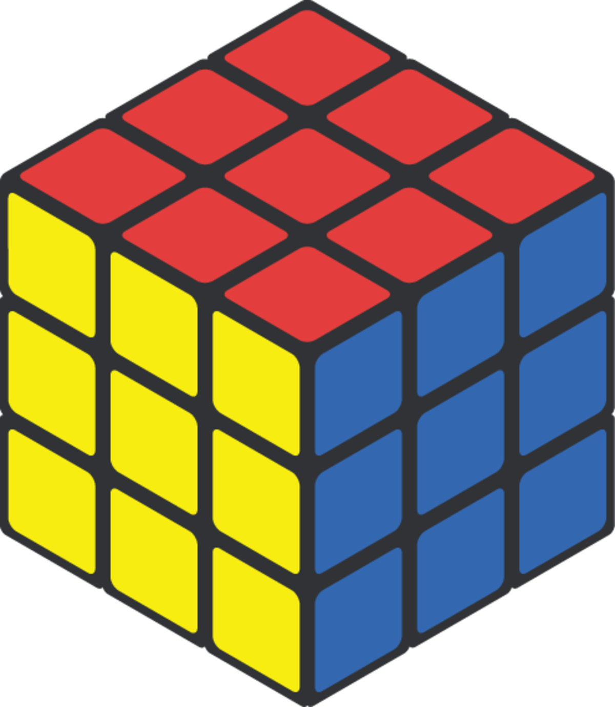

Quem sou eu?
Sou Matheus Leite, tenho 18 anos e sou estudante do 3º período de Sistemas de Informação na UFU. Apaixonado por tecnologia, escolhi este curso para melhorar minhas habilidades e adquirir mais conhecimento sobre esse universo que tanto admiro. Minha matéria preferida é Algoritmos e Programação e minha área de interesse é o Back-end.
Minha trajetória
Minha jornada começa quando eu era mais novo, e comecei a desenvolver meu interesse pelo mundo da tecnologia. A primeira coisa que aprendi foi a desenvolver usando HTML e CSS. Querendo aprender cada vez mais, me formei no curso técnico de Redes de Computadores no IFTM. Assim, desde cedo eu sabia que escolheria uma faculdade na área de TI, e por isso estudei para passar na faculdade de Sistemas de Informação na UFU, onde estou atualmente.
Curiosidades
Cubo Mágico
Sou apaixonado com desafios que exigem lógica e criatividade. Enquanto resolvo um cubo mágico em menos de 1 minutos (minha melhor marca!), treino meu cérebro para enxergar padrões e otimizar algoritmos – habilidades que uso diariamente em problemas de programação.
Sudoku
Já o Sudoku me ajudou a desenvolver um bom racicínio lógico, pois é um jogo que exige criatividade e o desenvolvimento de estraégias por parte do jogador.

Música
E quando preciso de um respiro? Pego meu violão e toco algumas músicas, sendo essa minha outra paixão, que me ajuda a relaxar e me desestressa.
.png)
Minhas Skills
Linguagens de Programação
Ferramentas de Desenvolvimento
Tecnologias
Habilidades Interpessoais
- Escuta Ativa e Empatia
- Organização e Atenção aos Detalhes
- Persistência e Disciplina
- Capacidade Analítica e Resolução de Problemas
- Trabalho em Equipe e Colaboração
- Estabilidade Emocional e Autocontrole
Em projetos, a escuta ativa e a empatia são essenciais para entender as necessidades dos clientes e alinhar as expectativas da equipe.
A organização e atenção aos detalhes garantem que cada etapa seja planejada e executada com precisão, minimizando erros e imprevistos.
A persistência e disciplina mantêm o foco mesmo diante de desafios e prazos apertados, enquanto a capacidade analítica e a resolução de problemas permitem identificar riscos e propor soluções eficazes.
O trabalho em equipe e a colaboração fomentam a troca de ideias e fortalecem o espírito de grupo, e a estabilidade emocional aliada ao autocontrole assegura decisões acertadas em momentos de pressão.
Juntas, essas habilidades criam um ambiente propício à inovação e à entrega de projetos de alta qualidade.